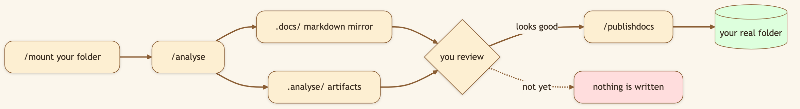
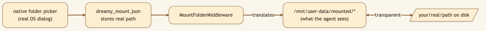
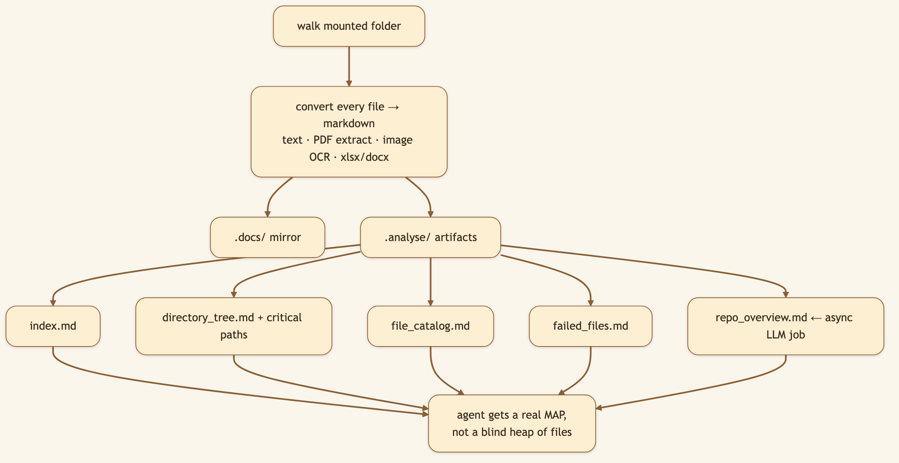

LinkedIn hook (use as the post's first line): "Cloud AI tools make you upload your files into their sandbox, one at a time. We flipped it: point the AI at a real folder on your machine — and it never touches your files until you say so." Audience: LinkedIn → Medium. Developers, consultants, lawyers, analysts — anyone whose real work lives in local folders they can't upload.
The chat box is a command line. Type / in the workspace and the verbs you need are one slash away — no buttons to hunt for, no settings panes.
/mount Pick a local folder → mounted into the sandbox
/analyse Mirror the folder to markdown + build analysis artifacts (read-only)
/publishdocs Publish reviewed docs back to the mounted folder
/handoff Package a structured handoff and fork into a new thread
/compact Force deterministic context compaction
/recover Clear a stuck run and resume
/new Fresh chat in this workspace
/rename Rename the thread
🖼️ [User add: image containing — the
/command menu open in the input box, showing the command list. Capture from the running app by typing "/".]

The agent cannot sneak changes into your folder. /analyse only stages into scratch dirs; the only command that writes back is /publishdocs, run deliberately by you.
/mount makes your files look local to the sandbox
/analyse produces (4-stage, read-only)
🖼️ [User add: image containing — a real screenshot of a generated repo_overview.md open in the workspace, showing the architecture summary + critical files. Capture after running /analyse on a project.]
/mount opens the real OS folder picker (osascript on macOS, zenity/kdialog on Linux), validates the directory, and persists its absolute path to dreamy_mount.json. MountFolderMiddleware then translates between the virtual /mnt/user-data/mounted/* path the agent sees and the real on-disk location, so read_file, write_file, and bash all just work on your actual files. (It injects a <mounted_folder> system note in Work Mode only — not Plan Mode.)/analyse runs a four-stage pipeline (router: backend/src/gateway/routers/workspace_io.py): mirror-to-markdown → build .analyse artifacts → spawn an async LLM job that writes repo_overview.md (architecture, key features, execution flow, risks, recommended reading order) → hand the structured map to the agent. You can poll the async job for status./publishdocs is the single write-back path, gated behind the repo-overview refresh status so you don't publish over a stale analysis./analyse → review → /publishdocs contract gives you the power without the terror: nothing touches your files until you commit.Title card: "Stop uploading files. Point your AI at a real folder."
[0:00–0:10] Hook: "Every cloud AI tool wants me to upload my files into their box. My real work can't leave my machine. So I mount it instead."
[0:10–0:25] Screen — type /mount, OS picker opens, choose a project: "Slash-mount. That's my actual OS folder picker. I pick a real project."
[0:25–0:45] Screen — type /analyse: "Slash-analyse. It mirrors everything to markdown and writes an architecture overview — a real map of the codebase. And notice: it has not touched my files."
[0:45–1:00] Screen — ask a question, then /publishdocs: "Now I can ask 'how does this fit together?' and get a grounded answer. When I'm happy, only then does /publishdocs write results back."
[1:00–1:10] Close: "Your files, your machine, your call. Open source, link below."
/mounta project folder,/analyseit, read the generatedrepo_overview.md, then ask "how does this codebase fit together?"